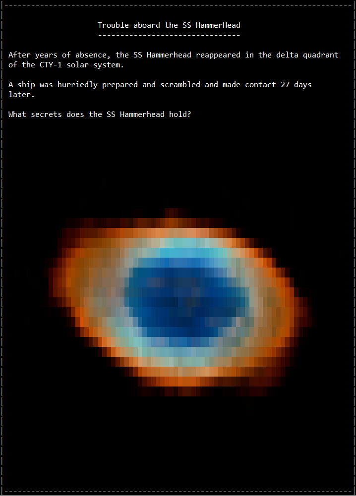
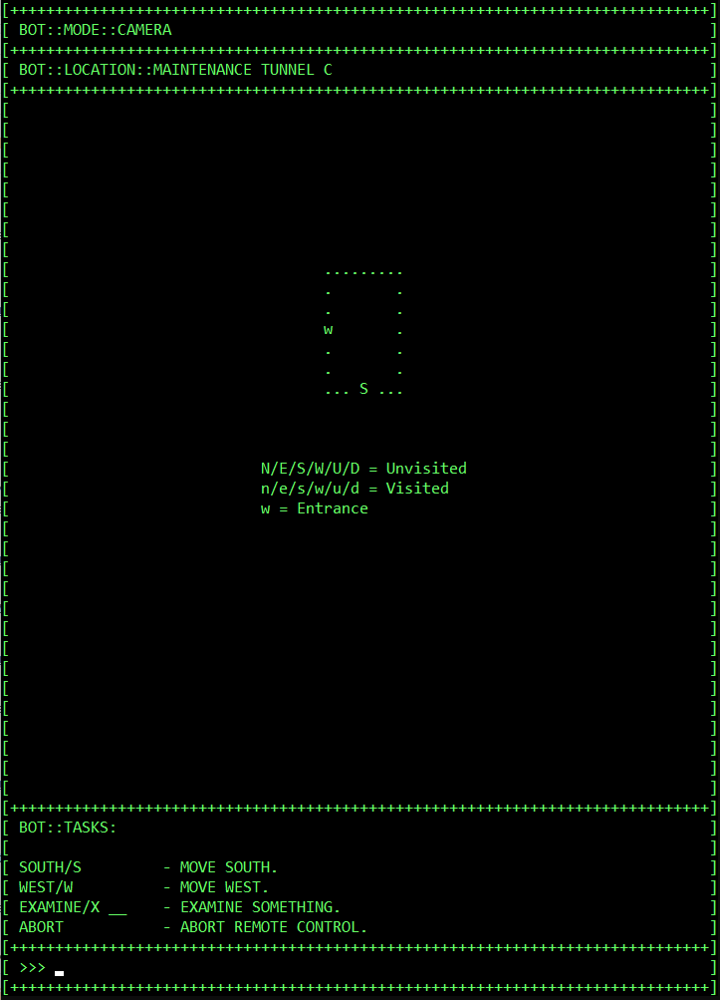
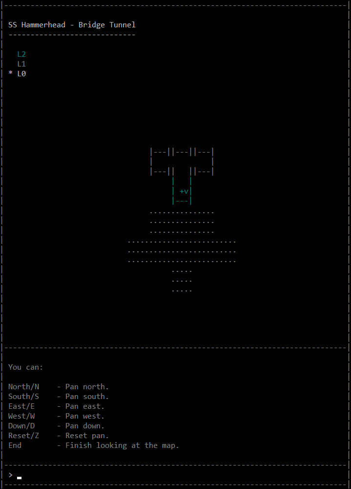
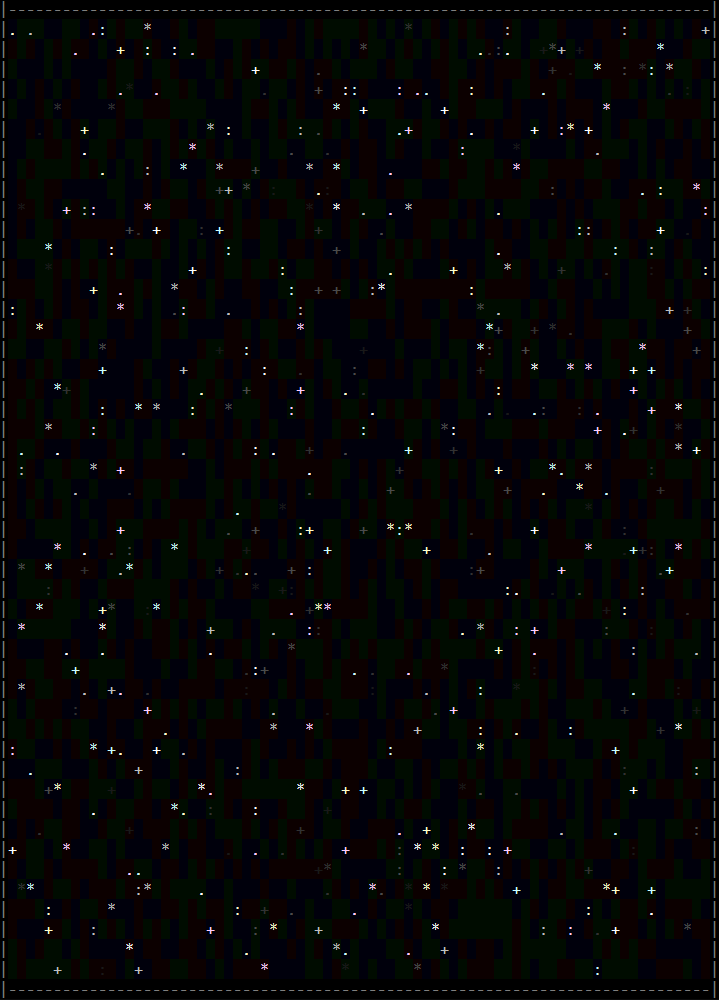

Trouble aboard the SS Hammerhead
Trouble aboard the SS Hammerhead is a text adventure written using NetAF set within a small ship that is drifting through space. Can you unravel the mystery and make it out alive before you succumb to whatever horrors lie in wait on the ship?
Download
Download the latest installer.
Premise
After years of absence, the SS Hammerhead reappeared in the delta quadrant of the CTY-1 solar system. A ship was hurriedly prepared and scrambled and made contact 27 days later. You enter the outermost airlock, and it closes behind you. With a sense of foreboding you see your ship detach from the airlock and retreat to a safe distance.
You take the role of Naomi Martin a 32-year-old shuttle mechanic. Throughout the course of the story you must navigate through the ship and interact with the various items and the environment to progress through the story and unravel the mysteries of the ship.

Take control of the mighty Spider Maintenance Bot and use it to explore inaccessible regions of the ship from a different perspective:

The SS Hammerhead itself is a multi-level ship, you will need to work your way towards the bridge as you progress through the game. What will you find when you get there, and importantly, are you truly aboard on your own?

Commands
The following NetAF commands are supported for interacting with game elements:
- Drop X - drop an item.
- Examine X - allows items, characters and environments to be examined.
- Take X - take an item.
- Talk to X - talk to a NPC, where X is the NPC.
- Use X on Y - use an item. Items can be used on a variety of targets. Where X is the item and Y is the target.
- N, S, E, W, U, D - traverse through the rooms of the ship.
The following NetAF global commands are also supported:
- About - display version information.
- CommandsOn / CommandsOff - toggle commands on/off.
- Exit - exit the game.
- Help - display the help screen.
- KeyOn / KeyOff - turn the Key on/off.
- Map - display the map.
- New - start a new game.
There are many other commands that can be used to interact with the environment throughout the course of the game.
